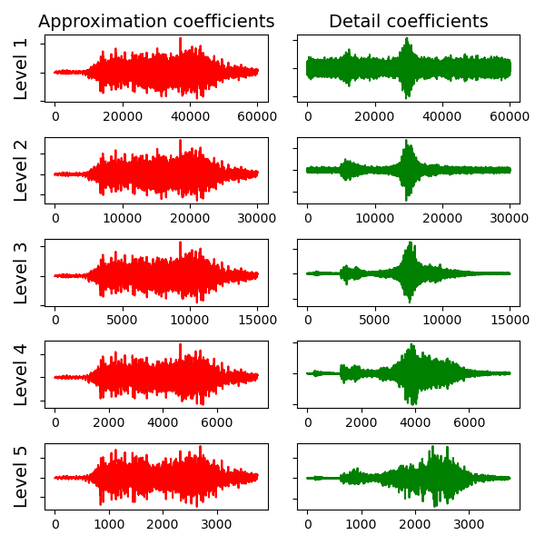

What are hydro-acoustic signals
Bernabe Gomez
Ocean acoustics involve the study of sound waves as they travel through water. These sound waves are created by the compression and expansion of the medium, and as they propagate, they carry energy through the water. By using distant hydrophones (underwater microphones), scientists can record these sound waves. Analyzing these recordings provides valuable insights into the underwater environment, including information about marine life, underwater topography, and even the detection of natural and human-made events.
Open access hydro-acoustic data
Ocean Networks Canada (ONC) provides open access to a wealth of oceanographic data collected from a network of hydrophones with varying characteristics. These hydrophones are strategically deployed along the coastlines and underwater observatories to capture detailed acoustic data. The recordings from these hydrophones can be used to study marine ecosystems, monitor underwater seismic activity, and observe human impact on the ocean environment. ONC's data is available for researchers, educators, and the general public, facilitating a wide range of scientific studies and environmental monitoring efforts.
Extracting and analyzing the data
On my GitHub page, you can find codes for analyzing ocean sounds, including examples such as orca calls recorded by Canada's Ocean Networks and sounds from earthquakes. Python Code
In this lesson, we analyze one earthquake by downloading the data as a .wav file. Python is then used to read the file and plot the earthquake's sound waves. First we plot the time series of the signal:

Signal of an Earthquake at South of Port Hardy, Vancouver Island
On the next step we will analyse the frequency content by plotting the fourier transform of the time series signal, for this purpuse we can utilize the FFT algorithm with is a fast implementation of the Discrete fourier transform:
FFT applied to the earthquake signal
The fourier transform only provides information about the frequency content of the analysed signal. However, if we want to bserve how that frequency content varies in time we need to calculate the spectrogram, which is composed by dividing the time series into multiple windows and cmputing fourier transforms of each window and then plotting everything together.

Spectrogram f the earthquake signal
A wavelet transform is a mathematical technique used to decompose a signal into different frequency components, each with its own resolution. Unlike the Fourier transform, which represents a signal using sine and cosine functions with a constant frequency over time, the wavelet transform uses functions called wavelets that can vary in scale and position. This allows it to provide both time and frequency information simultaneously, making it particularly useful for analyzing non-stationary or transient signals.
In wavelet analysis, the scale parameter determines the width (or duration) of the wavelet. Lower scales correspond to narrower (shorter duration) wavelets, which capture high-frequency details (fast changes). Higher scales correspond to wider (longer duration) wavelets, which capture low-frequency components (slow changes or trends). As we can see below:
Wavelet scales which act as low pass filters
In this case we chose to decompose the signal into five levels. In the first decomposition level, the signal is split into a low-frequency approximation and a high-frequency detail. In the second level, the approximation is further decomposed into another set of approximation and detail coefficients, and so on.
A scalogram is a powerful tool for visualizing the time-scale representation of a signal using wavelet transforms. It helps understand how the frequency content of a signal changes over time, making it valuable for analyzing complex, time-varying phenomena in various fields, including ocean acoustics, seismology, and biomedical engineering.

Scalogram of the earthquake signal